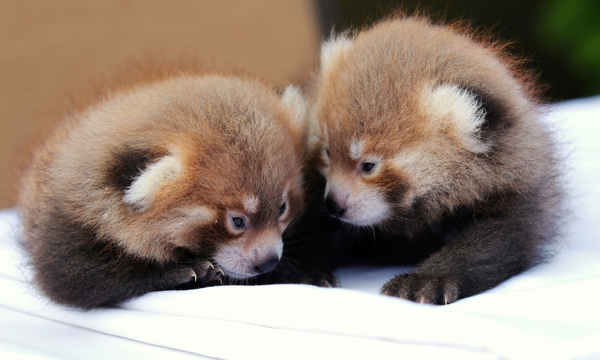
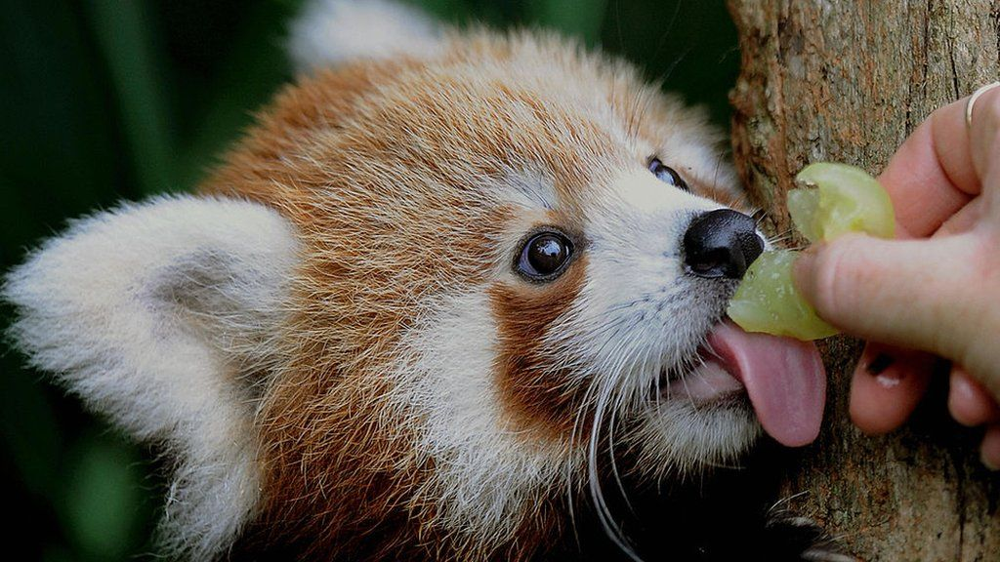
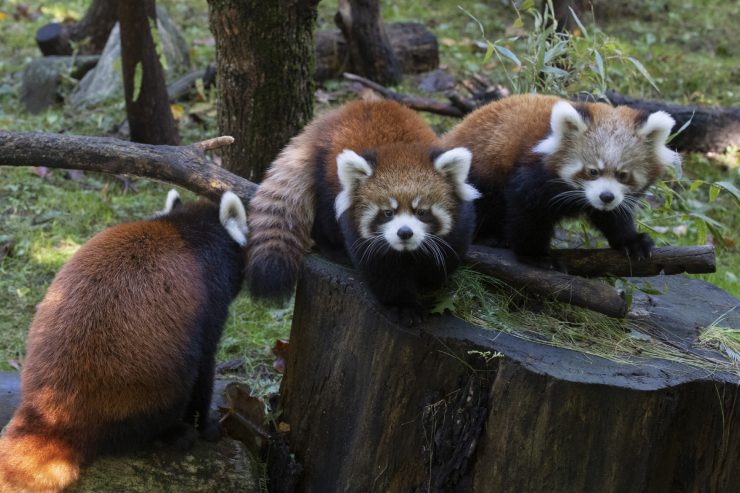
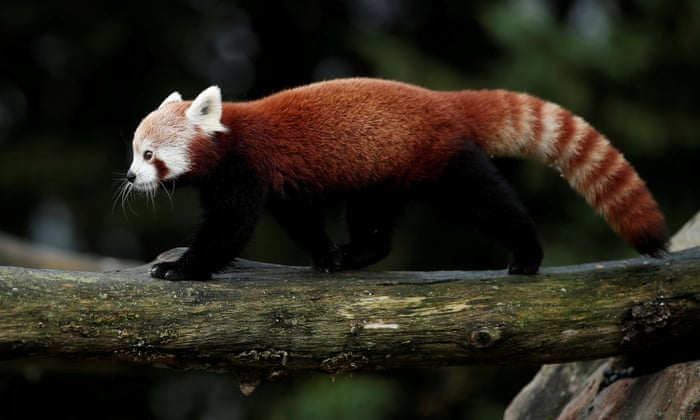
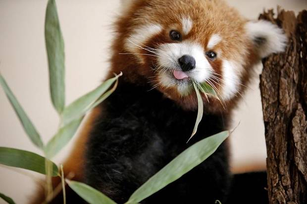
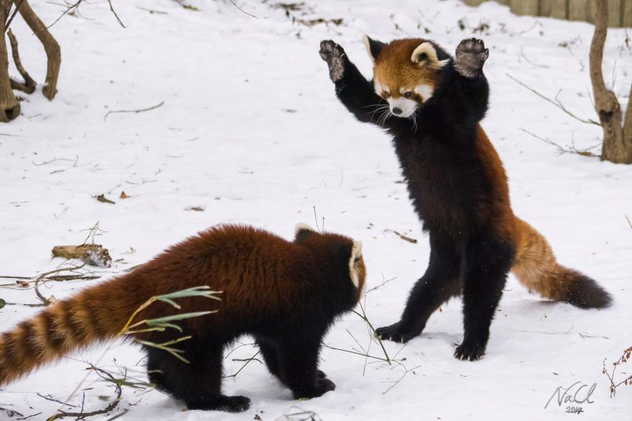
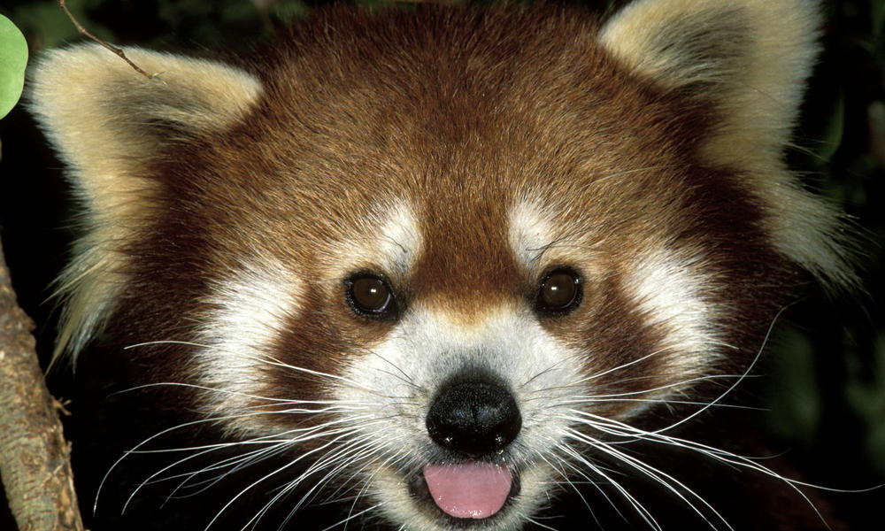
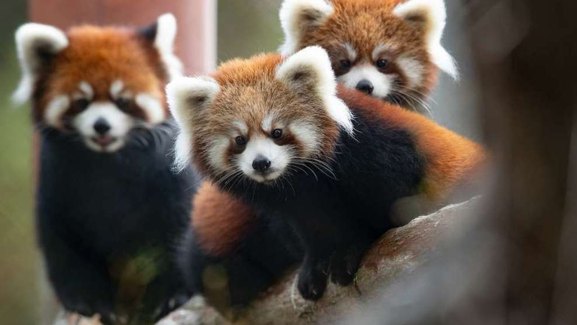
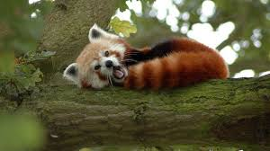
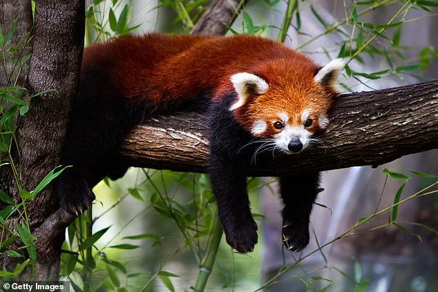

Red pandas are similar in size to the common house cat. They are 20 to 26 inches (51 to 66 centimeters) long from head to rump, and their tail adds another 10 to 20 inches (25.4 to 51 cm). They weigh from 10 to 20 lbs. (4.5 to 9 kilograms).
One feature that red pandas do share with giant pandas is a modified wrist bone that acts like a thumb, helping them grasp bamboo when feeding, according to the National Zoo.
Red pandas live in the mountains of Nepal, central China and northern Myanmar in rainy, high-altitude temperate forests and tropical forests, according to the National Zoo.
When they wake up, red pandas groom themselves like cats, according to the San Diego Zoo. They lick their front paws and use them to wipe down their fur instead of a full tongue-to-fur bath, though.
Female red pandas give birth during the spring and summer after a gestation period of 114 to 145 days, according to the National Zoo, although it may be as short as 90 days and as long as 158 days.
Females build birthing dens in stumps, hollow trees or rock crevices. Dens are lined with grass, leaves, twigs, moss and small branches.
Females can have one to four young, though they usually have twins, according to the San Diego Zoo. The baby red pandas are called cubs.
Cubs' eyes and ears are sealed until they are around 2 to 3 weeks of age. They nurse until they are 13 to 22 weeks old. They stay with their mothers in their birthing dens for about 90 days and reach maturity at 18 to 20 months. A typical life span for a red panda is 8 to 10 years in the wild and 15 years in zoos.
The red panda is considered endangered and is on the IUCN's Red List of Threatened Species.
The mascot of the Firefox Web browser is a red panda, according to Mozilla.